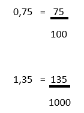

Exemplo:
10% de 100 = 10
Digite apenas o valor da Porcentagem:
Digite o valor que deseja calcular:
Exemplo:
1º - Porcentagem Fração
2° - Porcentagem Decimal
3º - Fração Porcentagem
4º - Fração Decimal
5º - Decimal Porcentagem
6º - Decimal Fração
1º
Digite apenas o valor da Porcentagem:
2º
Digite apenas o valor da Porcentagem:
3º
Digite o valor do Numerador:
Digite o valor do Denominador:
4º
Digite o valor do Numerador:
Digite o valor do Denominador:
5º
Digite o valor:
6º
Para transformar um número decimal em fração bastar seguir esses passos:
1- Copie o número sem vírgula.
2- Conte quantas casas decimais após a virgula.
3- Você pega essa quantidade e coloca como "0" no denominador.
Olhe o exemplo abaixo, serve para qualquer número decimal:

Exemplo:
1º - km m, cm, mm
2º - m km, cm, mm
3º - cm km, m, mm
4º - mm km, m, cm
1º
Digite o valor em km:
2º
Digite o valor em m:
3º
Digite o valor em cm:
4º
Digite o valor em mm:
Exemplo:
1º - Kelvin Celsius e Fahrenheit
2º - Celsius Kelvin e Fahrenheit
3º - Fahrenheit Kelvin e Celsius
1º
Digite apenas a Temperatura em Kelvin:
2º
Digite apenas a Temperatura em Celsius:
3º
Digite apenas a Temperatura em Fahrenheit: